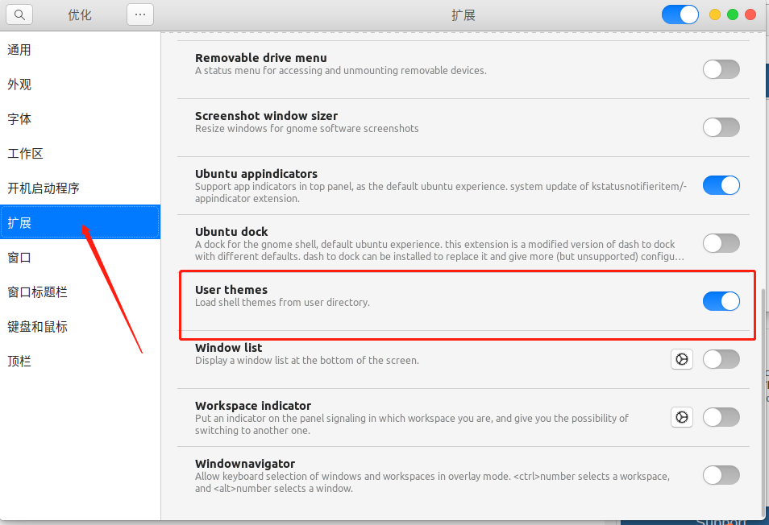
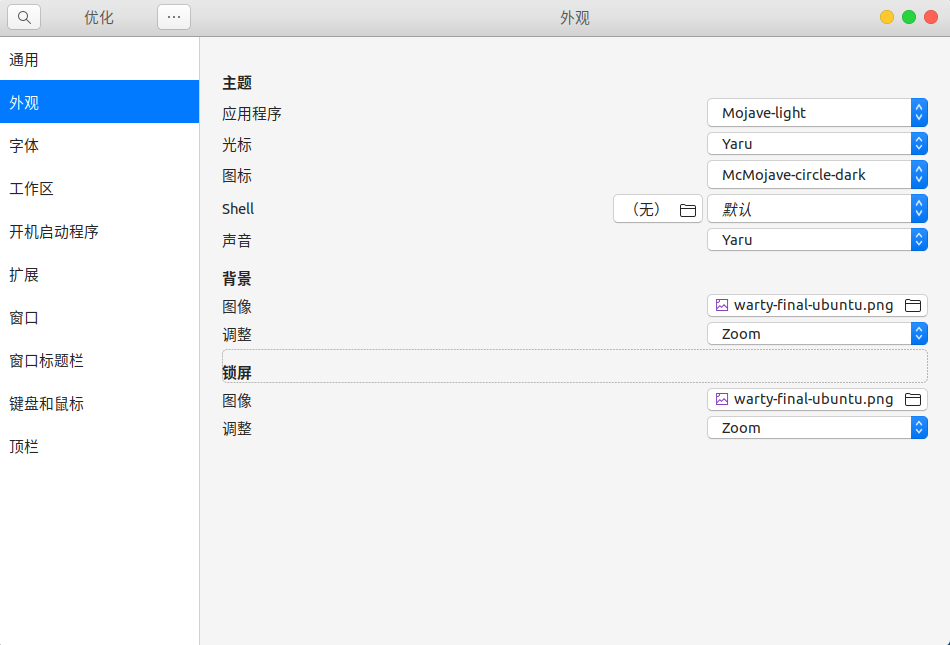
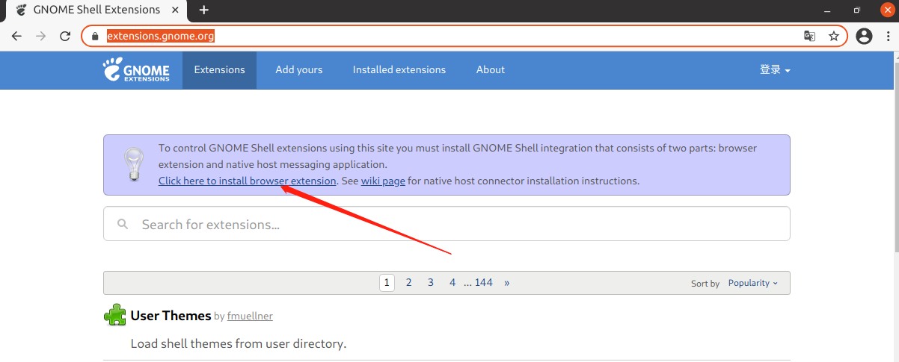
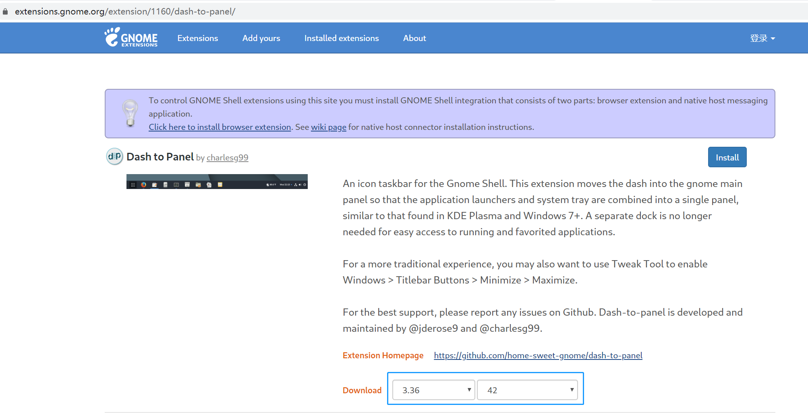
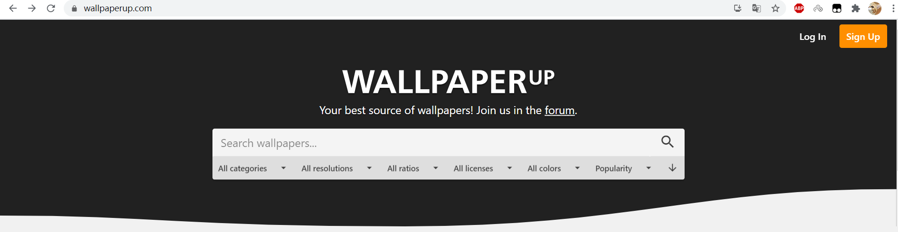
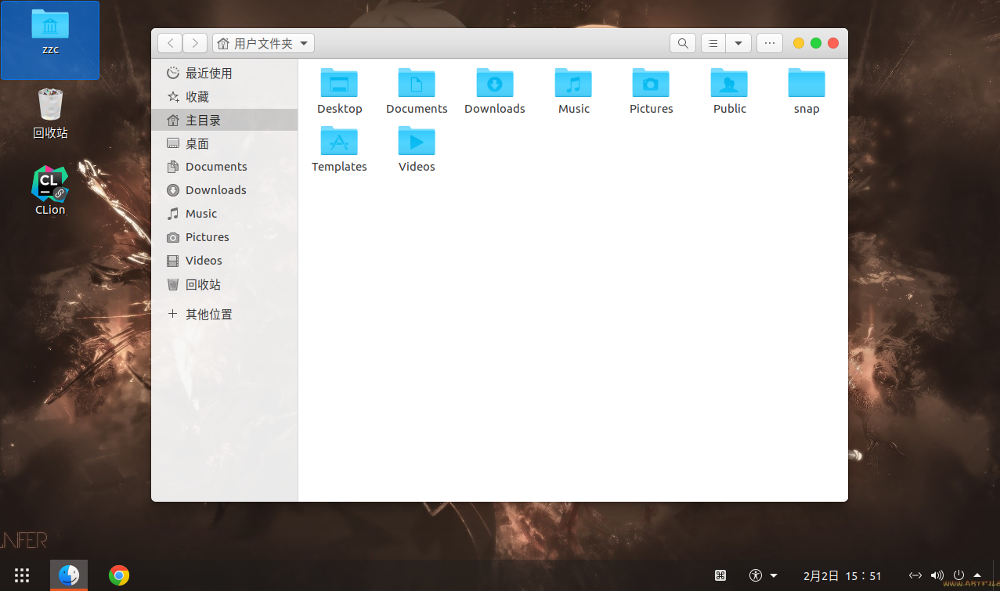
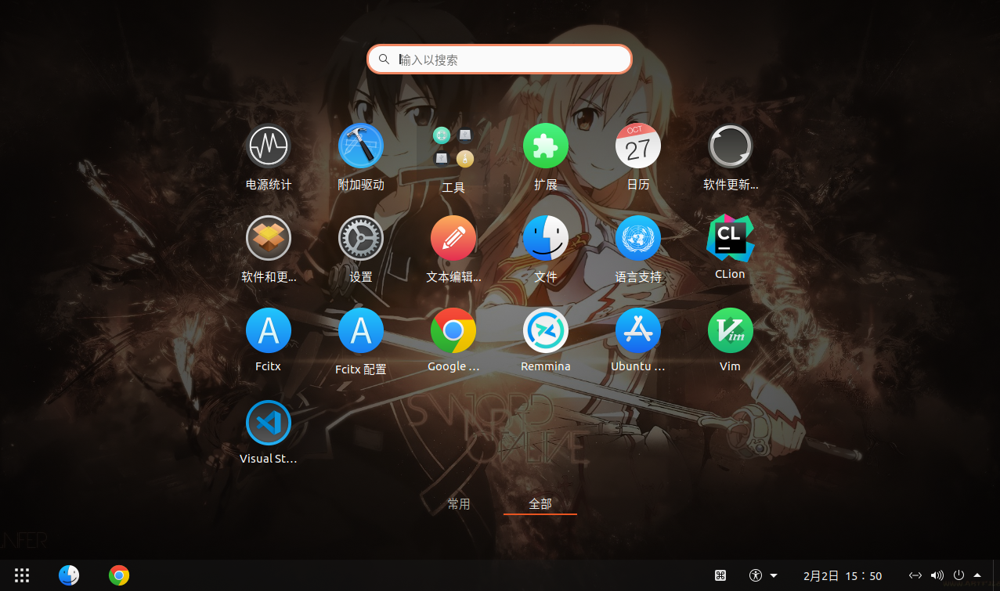

Ubuntu 20.04 / 22.04 桌面美化
[TOC]
准备工作
下载 gnome-tweak 和 gnome-shell-extensions
# ubuntu 20.04
sudo apt install gnome-tweak-tool
sudo apt install gnome-shell-extensions
# ubuntu 22.04
sudo apt install gnome-tweak
sudo apt install gnome-shell-extensions
打开 tweak (中文叫优化)，勾选 user themes；如果没有这个选项就注销或者重启一下
ubuntu22.04 的扩展有独立的 gnome-extensions-app (中文叫扩展)，没有在 tweak 里面

安装美化主题
打开 Gnome 主题网站
选择 GTK3 Themes
Mac 风格的主题 McMojave
解压下载下来的压缩包
目录复制到 /usr/share/themes/
安装美化图标
打开 Gnome 主题网站
选择 Full Icon Themes
Mac 风格的图标 McMojave-circle
解压下载下来的压缩包
目录复制到 /usr/share/icons/
使用 tweak 配置主题
根据个人情况选择自己需要的主题和图标

安装 Dock 扩展
在线安装
打开 Gmome 扩展官网，根据提示点击安装浏览器扩展，chrome 需要科学访问

离线安装
有些情况下，机器并不能直接访问外网，或者说不能科学山上网，无法安装 Chrome 插件，就需要离线安装了
获取 gnome shell 版本
gnome-shell --version
根据 gnome shell 版本，选择需要下载的版本

使用 gnome-extensions install xxxx.zip 安装
按 Alt + F2 输入 r 后按回车，重启 (22.04 如果是 Wayland，不能重启，目前是直接重启电脑)
关闭并重新打开 tweaks，在扩展处就可以看到安装的扩展了
dock 扩展
二选一：
dash to dock，MAC风格
dash to panel，Windows风格
壁纸
推荐壁纸网站https://www.wallpaperup.com/

最终效果


由于个人水平有限，文中若有不合理或不正确的地方欢迎指出改正